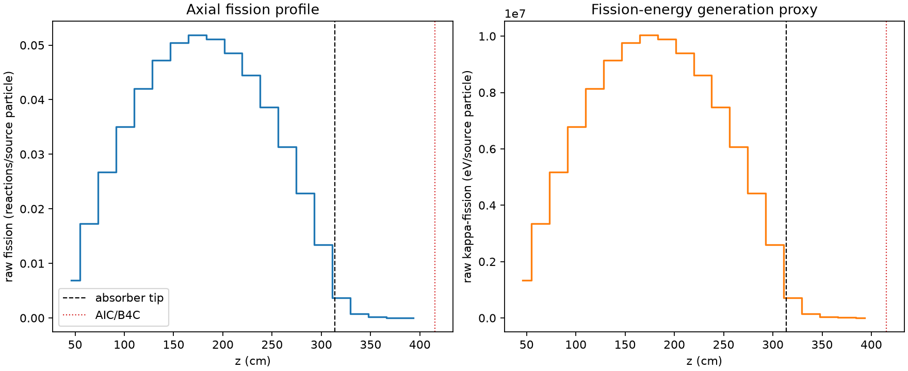
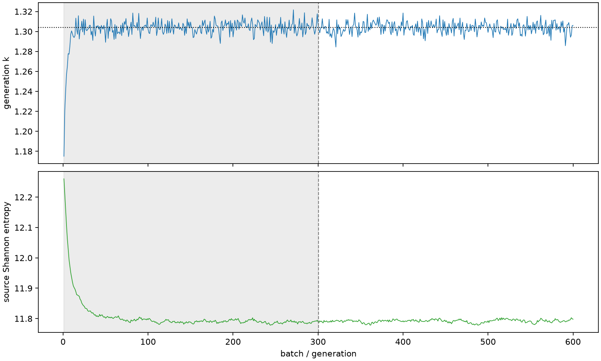

| field | value |
|---|---|
| experiment | V2-STAGE_256_OGRENCI_02-0016 |
| k | 1.3039403779429255 |
| MC standard error | 0.00019340883718074953 |
| seconds | 929.6051215769985 |
| acceptance | not_assessed |
| convergence | review_required |
Completed is output integrity only; physical and statistical review required. Zero tallies do not prove zero production or zero uncertainty.
| diagnostic | value |
|---|---|
| geometric fuel voxels | 5280 |
| zero fission tally voxels | 0 |
| low signal fuel voxels | 495 |
| low signal fission share | 0.00010234217719926895 |
| low signal kappa share | 0.00010237042326339811 |
| important fission share | 0.9500698722366118 |
| previous filter included | 4785 |
| duration estimate s | 1562.5173488400023 |
| actual minus estimate s | -632.9122272630038 |
| fission relative MC error | statistics |
|---|---|
| all_geometric_fuel | {"voxels": 5280, "positive_mean_voxels": 5280, "zero_mean_voxels": 0, "undefined_relative_error_voxels": 0, "median": 0.010745468053684901, "p95": 0.3175474611595932, "maximum": 0.7792706573403665} |
| low_signal | {"voxels": 495, "positive_mean_voxels": 495, "zero_mean_voxels": 0, "undefined_relative_error_voxels": 0, "median": 0.3353831205852895, "p95": 0.5789596853748418, "maximum": 0.7792706573403665} |
| important_95pct | {"voxels": 3406, "positive_mean_voxels": 3406, "zero_mean_voxels": 0, "undefined_relative_error_voxels": 0, "median": 0.008959095684593132, "p95": 0.013330955651744199, "maximum": 0.018528627534730842} |
| outside_previous_filter | {"voxels": 495, "positive_mean_voxels": 495, "zero_mean_voxels": 0, "undefined_relative_error_voxels": 0, "median": 0.3353831205852895, "p95": 0.5789596853748418, "maximum": 0.7792706573403665} |
| kappa_fission relative MC error | statistics |
|---|---|
| all_geometric_fuel | {"voxels": 5280, "positive_mean_voxels": 5280, "zero_mean_voxels": 0, "undefined_relative_error_voxels": 0, "median": 0.010734171003000604, "p95": 0.31694084471506445, "maximum": 0.7781898700883051} |
| low_signal | {"voxels": 495, "positive_mean_voxels": 495, "zero_mean_voxels": 0, "undefined_relative_error_voxels": 0, "median": 0.3351846171679031, "p95": 0.5785872079714467, "maximum": 0.7781898700883051} |
| important_95pct | {"voxels": 3406, "positive_mean_voxels": 3406, "zero_mean_voxels": 0, "undefined_relative_error_voxels": 0, "median": 0.00894947988846996, "p95": 0.013318066045680308, "maximum": 0.018509641077945886} |
| outside_previous_filter | {"voxels": 495, "positive_mean_voxels": 495, "zero_mean_voxels": 0, "undefined_relative_error_voxels": 0, "median": 0.3351846171679031, "p95": 0.5785872079714467, "maximum": 0.7781898700883051} |
| axial bin | fission share | kappa-fission share |
|---|---|---|
| 1 | 0.012917498246242727 | 0.01291798873093709 |
| 2 | 0.03252286627239829 | 0.03252260537100416 |
| 3 | 0.05018406679271564 | 0.05018387458333624 |
| 4 | 0.06583981292482885 | 0.06583954398364758 |
| 5 | 0.0788945465941307 | 0.07889431947132564 |
| 6 | 0.08868786064114705 | 0.08868754576947346 |
| 7 | 0.09472599830643555 | 0.09472582626592013 |
| 8 | 0.0972635365309103 | 0.09726326327848046 |
| 9 | 0.0959329170039668 | 0.09593284702316876 |
| 10 | 0.09121618957136109 | 0.09121585548915007 |
| 11 | 0.08349082841133768 | 0.08349055369147695 |
| 12 | 0.07257765518880675 | 0.0725774922600096 |
| 13 | 0.058785033594867205 | 0.05878497763754241 |
| 14 | 0.0429408513699165 | 0.0429408421749029 |
| 15 | 0.025189798404120427 | 0.02518984269725803 |
| 16 | 0.0068352201634504246 | 0.006836655392200808 |
| 17 | 0.0015071660584692898 | 0.0015076665013229104 |
| 18 | 0.00037361088735866167 | 0.00037372527028087525 |
| 19 | 9.304536425828754e-05 | 9.306998347262217e-05 |
| 20 | 2.149767327787312e-05 | 2.1504425089238054e-05 |
Histories include the inactive-to-active transition at batch 300. kappa-fission approximates fission energy production, not total heat deposition.

